Overview
The security company ESET [1], in association with CERT-UA [2], has identified a variation of the Industroyer malware [3]. In contrast to the initial version, this sample seems to be created to target specific environments due to its use of hard-coded IP addresses and configuration parameters. It incorporated only the IEC-104 protocol as its preferred method of communication with the targeted devices. The overall functionality of the malware aims once again to perform actions against the electrical sector of Ukraine.
Analysis
The malware is created to target specific ICS devices that leverage the IEC 60870-5-104 protocol commonly found in the electrical sector [4]. This is the only protocol that is leveraged this time compared to the multitude of protocols that were accompanying the original version.
As seen in Figure 1, the malware has been compiled on March 23, 2022, at 04:07:29. This precedes the compilation of the sample that is detailed in the ESET report (March 23, 2022, 06:35:32). The sample also differs from the one reported by ESET in terms of the number of embedded configurations. The provided sample includes three configurations (Figure 2) while the one from ESET includes eight. That could indicate the compromise of multiple entities from the threat actor in order to achieve a greater effect. Industroyer2 can communicate with numerous devices by spanning multiple threads.
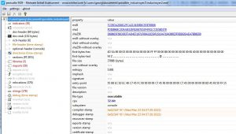
The malware provides two options to the user via the -t and -o parameters, as seen in Figure 3. The former can be used to delay the execution of Industroyer2 while the latter allows writing the output to a log file (Figure 4).
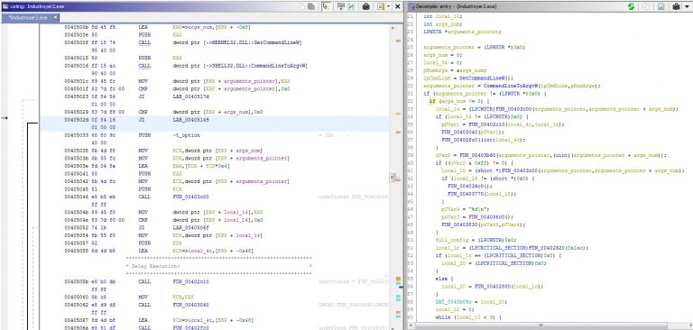
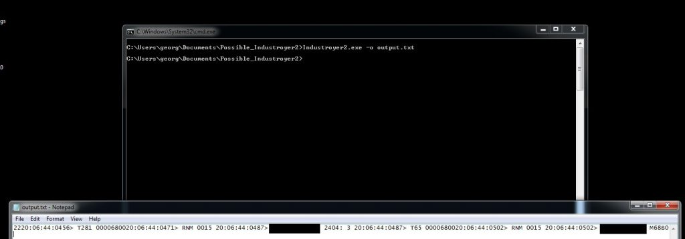
It then proceeds with the parsing of the parameters from the hard-coded strings (Figure 5). We see that the stations’ IP addresses and the IEC-104 protocol port are defined in the configuration strings along with some IEC-104-specific information such as ASDU (Application Service Data Unit), Information Object Addresses (IOA) [4], and the actions that will be taken against the targeted devices, as seen in Figure 6. Some of the fields of each configuration string that can be seen immediately are the ASDU (3,2,1), a predefined number of the IOA (44, 8, 16), each IOA (e.g., 130202, 1104, 1258), and an indicator of which IOA is executed (e.g., 1,2,3…44). Each configuration seems to follow the structure of the configuration file that was related to the Industroyer version of 2016.
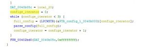
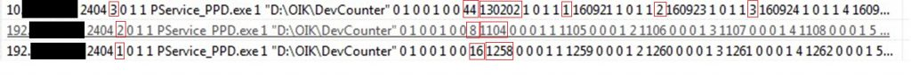
Once the parsing has finished, the malware attempts to terminate the processes that have its name hard-coded in the executable and rename a file provided in the configuration by adding the .MZ file extension to it (Figure 7). That could have been an attempt to make restoration of communications of the benign software with the devices more difficult, as such a rename will prevent any task or service from re-launching it.
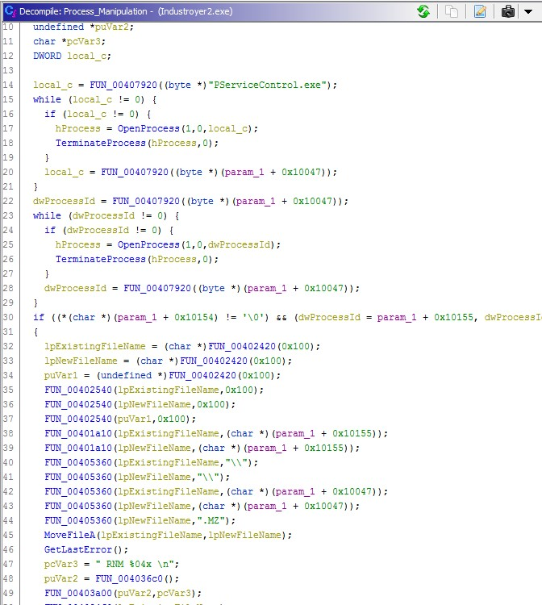
Industroyer2 then moves on with the creation of sockets and connections with IP addresses from the configuration strings. Figure 8 illustrates the actions that are followed based on the IEC-104 protocol, enabling the malware to test, start, and stop the transfer of data.
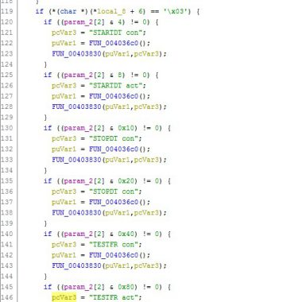
The threat actor seems to be in the knowledge of the targeted environments, as configurations include specific IOAs and actions that are performed by the malware. The state of each device based on the IOA can be set to either ON or OFF. Using an IEC-104 simulator provided by FreyrSCADA [5], we can see the actions and changes of Industroyer2. Using a partial configuration of 4 IOAs that are embedded in the first configuration string (Figure 9), we see that when the malware is initiated, the values of the IOA can be changed, as illustrated in Figure 10.
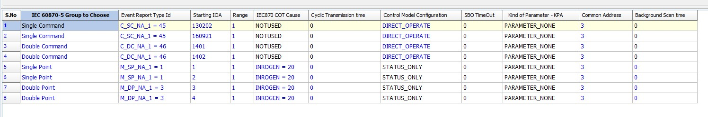
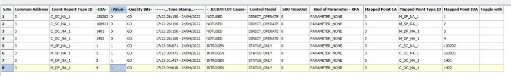
An overview of the packet capture can be found in Figure 11. We can see that the testing and start of connections take place along with the issue of commands. We can also observe that the threat actor is in possession of specific information about the environment since, if we do not provide some specific IOAs to the server simulator, the response will be an unknown IOA status (UkIOA in Figure 12), something that the log output does not provide information for (Figure 13).
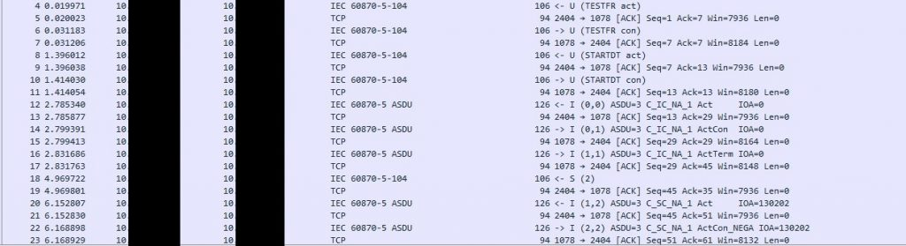
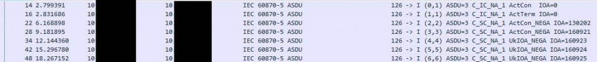
Conclusions
Overall, we can see that the attackers can tailor their malware to fit each targeted environment and at the same time be extremely effective. Industroyer2 appears to have its industrial communications capabilities properly implemented. However, a lot of similarities to the first version of Industroyer, such as the included debug messages, make Industroyer2 detectable with the YARA rules of the 2016 variant.
Acknowledgements
Advice and input given by Cameron Williams and Scott Shoup have been a great help in the technical analysis of this sample.
Indicators of Compromise (IoC)
| File Name | SHA-1 | SHA-256 |
| Industroyer2.exe | fdeb96bc3d4ab32ef826e7e53f4fe1c72e580379 | d69665f56ddef7ad4e71971f06432e59f1510a7194386e5f0e8926aea7b88e00 |
References
[1] “Industroyer2: Industroyer reloaded” [Online]. Available: https://www.welivesecurity.com/2022/04/12/industroyer2-industroyer-reloaded/ (visited on 04/25/2022).
[2] “Cyberattack of Sandworm Group (UAC-0082) on energy facilities of Ukraine using malicious programs INDUSTROYER2 and CADDYWIPER (CERT-UA # 4435)” [Online]. Available: https://cert-gov-ua.translate.goog/article/39518?_x_tr_sl=uk&_x_tr_tl=en&_x_tr_hl=el&_x_tr_pto=wapp (visited on 04/25/2022).
[3] “WIN32/INDUSTROYER: A new threat for industrial control systems” [Online]. Available: https://www.welivesecurity.com/wp-content/uploads/2017/06/Win32_Industroyer.pdf (visited on 04/25/2022).
[4] “Description and analysis of IEC 104 Protocol” [Online]. Available: https://www.fit.vut.cz/research/publication-file/11570/TR-IEC104.pdf (visited on 04/25/2022).
[5] “IEC 60870-5-104 Protocol RTU IED Server Simulator User Manual” [Online]. Available: https://www.freyrscada.com/docs/FreyrSCADA-IEC-60870-5-104-Server-Simulator-User-Manual.pdf (visited on 04/25/2022).